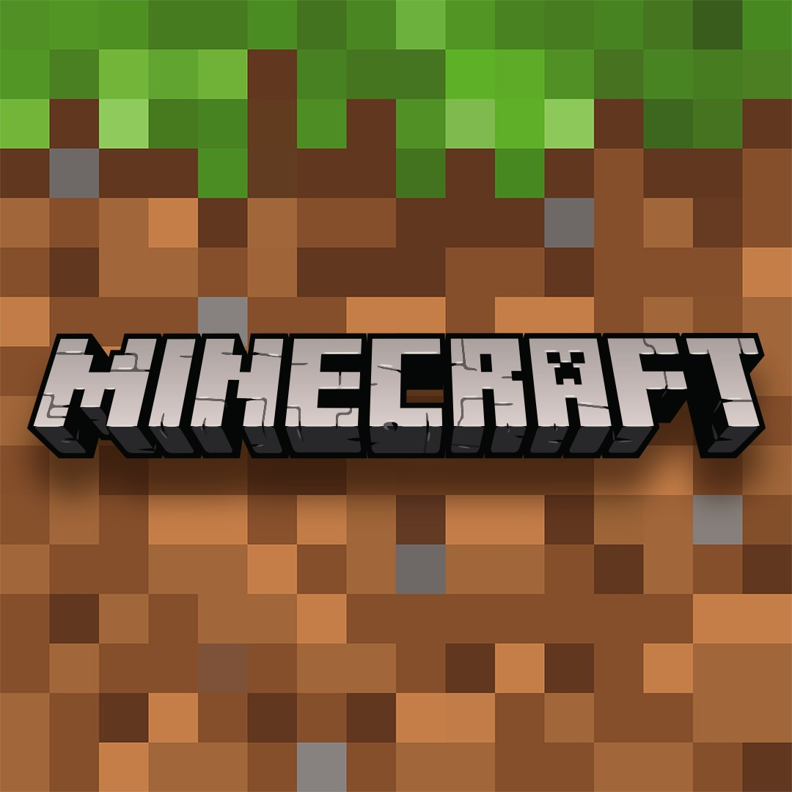
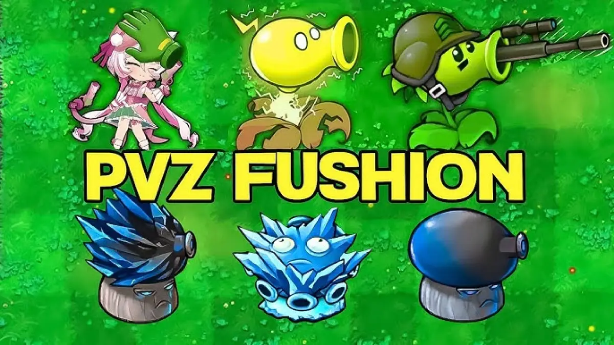

Games

Minecraft
Minecraft is a game known for its freedom and the infinite possibilities it offers.
Over time, the community has created various modified versions and different projects to bring new experiences to players.
These versions can add new features, improve gameplay, or completely change how the blocky world is explored.
Each fan-created project brings its own unique ideas, ranging from visual enhancements to new ways to play.
The Minecraft community is constantly creating new content to keep the game alive and full of possibilities.
Here, you can find some special Minecraft versions and projects.

Plants vs Zombies mods
Plants vs. Zombies is a game known for its creativity, strategy, and fun battles between plants and zombies.
Over the years, fans of the franchise have started creating their own modified versions of the game.
These versions introduce new plants, new zombies, different mechanics, and unique challenges.
Some modifications aim to enhance the original experience by adding content players have always wanted to see.
Others create a completely new experience, changing the way the game is played.
Versions like PvZ Fusion, PvZ Reflourished, and other community creations showcase the fans' creativity.
Each project features its own unique ideas and characteristics.
Some versions focus on deeper strategy, while others introduce new ways to combine plants and take on enemies.
These creations preserve the essence of Plants vs. Zombies while offering something fresh for both longtime and new players.
The fan community continues to create diverse experiences for those looking to return to the garden and face new battles.
Here, you can find some of the most well-known modified versions of Plants vs. Zombies.
Choose your favorite version, ready your plants, and take on the zombies!